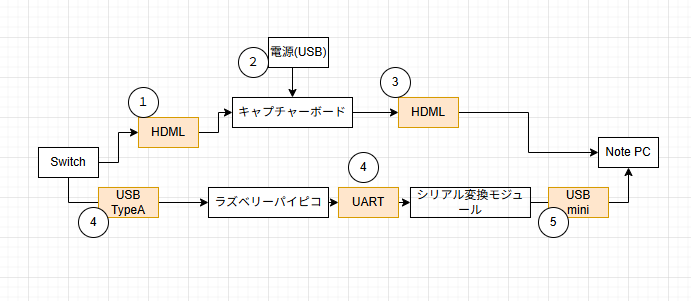
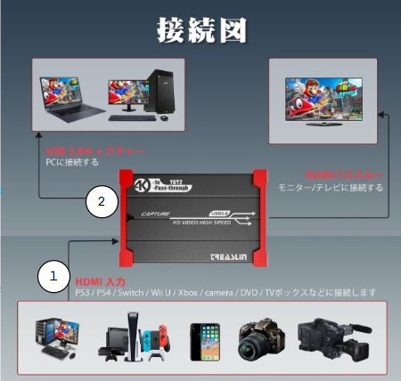
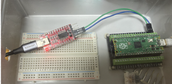
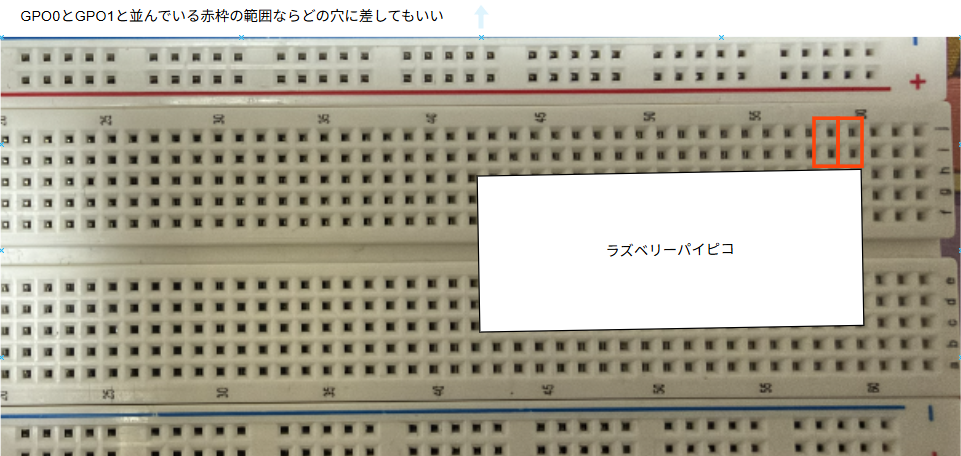

Manual
各作業のマニュアルです。
Git の使い方
このページでは、今回のファイル登録で使った Git コマンドと、次回からの基本操作を説明します。 コマンドは Windows PowerShell で実行する例です。
GitHub に登録されるまで
Git の基本的な流れは、次のとおりです。
変更する: ファイルを編集・追加します。
状態を確認する:
git statusで変更内容を確認します。登録対象を選ぶ:
git addでコミットに含めるファイルを選びます。変更を記録する:
git commitでローカルに記録します。GitHub に送る:
git pushでコミットを共有します。
git add を実行しただけでは、変更は GitHub に送られません。
コミットとプッシュも必要です。
次回からの基本コマンド
以下は、GitHub からリポジトリを clone した作業フォルダで実行します。 最初に、現在のフォルダが Git リポジトリのルートか確認してください。
git rev-parse --show-toplevel
git status
git status で変更内容を確認し、今回のように登録対象を限定したいときは、対象を指定して git add します。
GitHub リポジトリのルートに AutoGame フォルダがある配置では、次のようになります。
git add -- AutoGame/AI AutoGame/Sphinx AutoGame/XAML AutoGame/requirements.txt
git diff --cached --name-only
git diff --cached --shortstat
git add -- <パス>: 指定したパスを次のコミットの対象にします。--は、後ろをオプションではなくパスとして扱う区切りです。git diff --cached --name-only: コミット対象に選んだファイルの一覧を表示します。git diff --cached --shortstat: 選んだ変更のファイル数や行数を短く表示します。
表示内容を確認してからコミットし、GitHub の main ブランチへ送ります。
git commit -m "変更内容が分かるメッセージ"
git push origin main
git commit は変更を手元の履歴に記録します。-m の後ろには、何を変更したか分かる短い説明を書きます。
git push origin main は、その履歴を origin という名前の GitHub リモートの main ブランチへ送ります。
プッシュ後は、GitHub のページを再読み込みしてファイルが登録されたことを確認します。 次に作業を始めるときは、先に GitHub の変更を取り込みます。
git pull --ff-only origin main
--ff-only は、ローカルと GitHub の履歴を安全に一直線で進められる場合だけ更新します。
履歴が分岐しているときは自動で統合せずに停止します。その場合、エラーを無視して強制プッシュせず、履歴の状態を確認してください。
今回使ったコマンド
今回は、ローカル側と GitHub 側の履歴に共通の祖先がなく、そのままでは通常の git push で GitHub を更新できない状態でした。
そこで、既存の作業ツリーや未コミット変更を巻き込まないよう、GitHub の最新 main を基点にした一時作業ツリーを使いました。
これは今回の状況に対応するための手順です。普段の作業で毎回行う必要はありません。
GitHub の最新状態を確認する
git fetch --no-tags origin main
git rev-list --left-right --count HEAD...origin/main
git merge-base HEAD origin/main
git fetch: GitHub の最新情報を手元に取得します。作業ファイルは変更しません。git rev-list --left-right --count: ローカルとリモートにしかないコミット数を表示します。今回の2 1はローカル側に2件、リモート側に1件だけのコミットがあったことを示します。git merge-base: 履歴の共通の祖先を確認します。今回は共通の祖先がありませんでした。通常のgit pushはリモート履歴を自動で上書きせず、更新を拒否します。
リモートを基点にした一時作業ツリーを用意する
git worktree add --detach D:\ag-publish-work origin/main
git worktree add は、同じリポジトリから別の作業フォルダを用意します。
--detach はブランチを新たに切り替えず、指定したコミットを基点に作業する指定です。
今回の一時フォルダは、ローカルの変更が残った作業フォルダとは分けて使いました。
ファイルをコピーして登録対象を限定する
実際には、今回のローカル配置から AI、Sphinx、XAML、requirements.txt を一時作業ツリー内へコピーしました。
コピーには PowerShell の robocopy と Copy-Item を使用しました。たとえば、XAML のコピーでは Visual Studio の個人用キャッシュ .vs を除外しました。
robocopy $source $destination /E /XD .vs /R:1 /W:1
Copy-Item $sourceRequirements $destinationRequirements
robocopy ... /E: サブフォルダを含めてコピーします。空のサブフォルダも対象です。/XD .vs:.vsディレクトリをコピー対象から除外します。/R:1 /W:1: コピーに失敗した場合、再試行を1回にし、再試行までの待ち時間を1秒にします。Copy-Item:requirements.txtなど個別のファイルをコピーします。
変更を確認し、コミットする
git add -- AutoGame/AI AutoGame/Sphinx AutoGame/XAML AutoGame/requirements.txt
git diff --cached --name-only
git diff --cached --shortstat
git commit -m "Add project folders and requirements" `
-m "Co-authored-by: Copilot <223556219+Copilot@users.noreply.github.com>"
今回は生成物も含める指定だったため、Sphinx の _build や XAML の bin、obj も登録対象に含めました。
Visual Studio の .vs は個人用のキャッシュやセッション情報が入るため除外しました。
空の AI フォルダは、Git が空フォルダを登録できないため、AI/.gitkeep という目印のファイルを置いて登録しました。
GitHub に送信して確認する
git push origin HEAD:refs/heads/main
git ls-remote --heads origin main
git worktree remove D:\ag-publish-work
git push origin HEAD:refs/heads/main: 今いる作業ツリーのコミット (HEAD) を、GitHub のmainに送ります。プッシュ前にリモートが変化していた場合、強制更新せずエラーになります。git ls-remote --heads origin main: GitHub のmainが指すコミットを確認します。git worktree remove: 一時作業ツリーを片付けます。通常は、そこでの作業を終えてから実行します。
今回のプッシュ後、リモートの main が作成したコミットを指していることを確認しました。
一方、元の作業フォルダには別の未コミット変更があったため、そのフォルダやローカルブランチは変更していません。
表示される記号の例
git status では、変更の種類を記号で表示します。
??: Git がまだ追跡していない新しいファイルです。M: 登録済みのファイルが変更されています。D: 登録済みのファイルが削除されています。A: 新しく追加され、コミットの対象になっています。
コミットしてよい変更だけを git add してください。意図しない削除 (D) や、自分のものではない変更がある場合は、まとめて追加・コミットせず、先に内容を確認します。
大きなファイルについて
今回のプッシュでは、約65 MB の DLL に対して GitHub から推奨サイズを超えているという警告が表示されましたが、プッシュ自体は成功しました。 大きなファイルが頻繁に更新される場合は、通常の Git 履歴が大きくなりやすいため、Git LFS を使うか、生成物をリポジトリに含めない方法を検討してください。 今回のように一度警告が出ただけなら、ファイルが GitHub に登録されたかをページ上で確認できます。
機器の接続方法

①：SwitchのHDMLポートとキャプチャーボードのINのところを接続
②：キャプチャーボードとNotePCをUSBで接続
③：SwitchのUSBとラズベリーパイを接続
④：ラズベリーパイピコのGPO0とシリアル変換モジュールのRXを接続、ラズベリーパイピコのGPO1とシリアル変換モジュールのTXを接続
⑤：シリアル変換モジュールのUSBポートとPCを接続


